| 18種類替身相關 | |||||||||||||||||||||||||||||||||||||||||||||||||||||||||||||||||||||||||||||||||||||||||||||||||||||||||||||||||||||||||||||||||||||||||||||||||||||||||||||||||||||||||||||||||||||||||||||||||||||||||||||||||||||||||||||||||||||||||||||||||||||||||||||||||||||||||||||||||||||||||||||||||||||||||||||||||
| 近距離： | 中距離： | 長距離： |
| 近くしか攻撃できないが破壊力がある。 | 遠近にもある程度ダメージを与えられる。 | 全ての距離に攻撃できるが破壊力は低い。 |
| 「パワー型」： | 「スピード型」： | 「操作型」： |
|
破壊力が高く大ダメージを与えられる。 スタンドパワーを最も発揮するタイプだ。 欠点は燃費が悪く攻撃属性以外技がほとんどない事。 |
スピードが速く命中率が高い。先制攻撃が可能。 広範囲に攻撃出来る事が最大の強みだ。 欠点は破壊力が若干低く、防御力がネック。 |
物質・力・動植物等を操作できるタイプ。 特殊な能力を扱う事が出来る場合が多い。 欠点は破壊力に欠ける事。戦闘向きではない。 |
| 「特殊型」： | 「補助型」： | 「群体型」： |
|
特殊能力に特化したタイプ。 直接ではなくスタンド能力で戦うタイプだ。 欠点はバランスが悪く、状態異常に弱い事。 |
主に味方への補助能力に特化したタイプ。 能力上昇や部分変化、修復などの能力を持つ。 欠点は攻撃属性技がほとんどない事。 |
複数のスタンド像を持つタイプ。主人公専用。 攻・防・特殊・補助など様々な効果を持つ。 欠点は全体的に出力不測で効果が薄い点。器用貧乏。 |
| スタンドイメージ | 説明（※性能はゲーム内のステータス値とは別物です） | ||||||||||||||||||||||||||||||||||||||||||||||||||||||||||||||||||||||||||||||||||||||||||||||||||||||||||||||||||||||||||||||||||||||||||||||||||||||||||||||||||||||||||||||||||||||||||||||||||||||||||||||||||||||||||||||||||||||||||||||||||||||||||||||||||||||||||||||
| 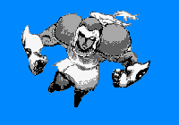 無口で落ち着いていて重量感があり鷹揚な人。 粘着的でじっくりと取り組み、冷静で隙を見せない。 辛抱強く質素を好み、慎重でコントロールが効く。 安定して孤独に強く、一人でいる事が多い。 |
レッド・ガーランド | ||||||||||||||||||||||||||||||||||||||||||||||||||||||||||||||||||||||||||||||||||||||||||||||||||||||||||||||||||||||||||||||||||||||||||||||||||||||||||||||||||||||||||||||||||||||||||||||||||||||||||||||||||||||||||||||||||||||||||||||||||||||||||||||||||||||||||||||
近距離パワータイプ
|
|||||||||||||||||||||||||||||||||||||||||||||||||||||||||||||||||||||||||||||||||||||||||||||||||||||||||||||||||||||||||||||||||||||||||||||||||||||||||||||||||||||||||||||||||||||||||||||||||||||||||||||||||||||||||||||||||||||||||||||||||||||||||||||||||||||||||||||||
| スタンド概要 | |||||||||||||||||||||||||||||||||||||||||||||||||||||||||||||||||||||||||||||||||||||||||||||||||||||||||||||||||||||||||||||||||||||||||||||||||||||||||||||||||||||||||||||||||||||||||||||||||||||||||||||||||||||||||||||||||||||||||||||||||||||||||||||||||||||||||||||||
|
赤い鎧の闘士のような人型スタンド。両手の拳で攻撃する。 また殴った相手の精神を過敏・愚鈍にする事ができる。 ただしパワーが強すぎる為、命中精度はあまりよくない。 逆に言えばパワーだけなら間違いなく最強クラス。 |
|||||||||||||||||||||||||||||||||||||||||||||||||||||||||||||||||||||||||||||||||||||||||||||||||||||||||||||||||||||||||||||||||||||||||||||||||||||||||||||||||||||||||||||||||||||||||||||||||||||||||||||||||||||||||||||||||||||||||||||||||||||||||||||||||||||||||||||||
| 元ネタ：William "Red" Garland・・・元プロボクサーのジャズピアニスト。 | |||||||||||||||||||||||||||||||||||||||||||||||||||||||||||||||||||||||||||||||||||||||||||||||||||||||||||||||||||||||||||||||||||||||||||||||||||||||||||||||||||||||||||||||||||||||||||||||||||||||||||||||||||||||||||||||||||||||||||||||||||||||||||||||||||||||||||||||
| スタンドイメージ | 説明（※性能はゲーム内のステータス値とは別物です） | ||||||||||||||||||||||||||||||||||||||||||||||||||||||||||||||||||||||||||||||||||||||||||||||||||||||||||||||||||||||||||||||||||||||||||||||||||||||||||||||||||||||||||||||||||||||||||||||||||||||||||||||||||||||||||||||||||||||||||||||||||||||||||||||
| 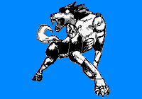 協調性はあり表面的に合わせるが用心深い人。 家族とは共に居たがり、愛想良く好奇心旺盛。 神経が図太く平然とし、一見温和で大人しく見える。 注意深く冷静で、家族を守る頼もしさを持つ。 |
ハウリン・ウルフ | ||||||||||||||||||||||||||||||||||||||||||||||||||||||||||||||||||||||||||||||||||||||||||||||||||||||||||||||||||||||||||||||||||||||||||||||||||||||||||||||||||||||||||||||||||||||||||||||||||||||||||||||||||||||||||||||||||||||||||||||||||||||||||||||
中距離パワータイプ
|
|||||||||||||||||||||||||||||||||||||||||||||||||||||||||||||||||||||||||||||||||||||||||||||||||||||||||||||||||||||||||||||||||||||||||||||||||||||||||||||||||||||||||||||||||||||||||||||||||||||||||||||||||||||||||||||||||||||||||||||||||||||||||||||||
| スタンド概要 | |||||||||||||||||||||||||||||||||||||||||||||||||||||||||||||||||||||||||||||||||||||||||||||||||||||||||||||||||||||||||||||||||||||||||||||||||||||||||||||||||||||||||||||||||||||||||||||||||||||||||||||||||||||||||||||||||||||||||||||||||||||||||||||||
| 狼型スタンド。遠吠えを衝撃波として放つ事ができる。 狼型なので、もちろん噛み付いたり爪でも攻撃できる。 パワーも強く瞬発力もあり、瞬間的な破壊力に富む。 全体的にバランスがいいタイプ。 |
|||||||||||||||||||||||||||||||||||||||||||||||||||||||||||||||||||||||||||||||||||||||||||||||||||||||||||||||||||||||||||||||||||||||||||||||||||||||||||||||||||||||||||||||||||||||||||||||||||||||||||||||||||||||||||||||||||||||||||||||||||||||||||||||
| 元ネタ：Howlin' Wolf・・・強烈なダミ声の黒人ブルースシンガー。. | |||||||||||||||||||||||||||||||||||||||||||||||||||||||||||||||||||||||||||||||||||||||||||||||||||||||||||||||||||||||||||||||||||||||||||||||||||||||||||||||||||||||||||||||||||||||||||||||||||||||||||||||||||||||||||||||||||||||||||||||||||||||||||||||
| スタンドイメージ | 説明（※性能はゲーム内のステータス値とは別物です） | ||||||||||||||||||||||||||||||||||||||||||||||||||||||||||||||||||||||||||||||||||||||||||||||||||||||||||||||||||||||||||||||||||||||||||||||||||||||||||||||||||||||||||||||||||||||||||||||||||||||||||||||||||||||||||||||||||||||||||||||
| 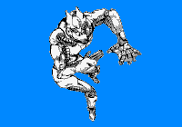 落ち着いていて責任感があり、義侠心が強い人。 冒険好きで勝気でぶしつけだが、警戒心も強く孤独。 力強く暴力的で傲慢、攻撃的で怒りっぽく自分勝手。 パワフルで粘り強く、秩序を重んじ決まりにうるさい。 |
オーシャン・ブルー | ||||||||||||||||||||||||||||||||||||||||||||||||||||||||||||||||||||||||||||||||||||||||||||||||||||||||||||||||||||||||||||||||||||||||||||||||||||||||||||||||||||||||||||||||||||||||||||||||||||||||||||||||||||||||||||||||||||||||||||||
遠距離パワータイプ
|
|||||||||||||||||||||||||||||||||||||||||||||||||||||||||||||||||||||||||||||||||||||||||||||||||||||||||||||||||||||||||||||||||||||||||||||||||||||||||||||||||||||||||||||||||||||||||||||||||||||||||||||||||||||||||||||||||||||||||||||||
| スタンド概要 | |||||||||||||||||||||||||||||||||||||||||||||||||||||||||||||||||||||||||||||||||||||||||||||||||||||||||||||||||||||||||||||||||||||||||||||||||||||||||||||||||||||||||||||||||||||||||||||||||||||||||||||||||||||||||||||||||||||||||||||||
| 体液にパワーを与えて撃ち出すスタンド。 汗、唾、涙などにスタンドパワーを込められる。 込めた体液に触れるとスタンドで殴ったような 打撃パワーや衝撃パワーをあたえられる。 体液が媒介な為、本体の消耗も激しいのが欠点。 |
|||||||||||||||||||||||||||||||||||||||||||||||||||||||||||||||||||||||||||||||||||||||||||||||||||||||||||||||||||||||||||||||||||||||||||||||||||||||||||||||||||||||||||||||||||||||||||||||||||||||||||||||||||||||||||||||||||||||||||||||
| 元ネタ：The Ocean Blue・・・ペンシルバニア州のインディギターポップバンド。 | |||||||||||||||||||||||||||||||||||||||||||||||||||||||||||||||||||||||||||||||||||||||||||||||||||||||||||||||||||||||||||||||||||||||||||||||||||||||||||||||||||||||||||||||||||||||||||||||||||||||||||||||||||||||||||||||||||||||||||||||
| スタンドイメージ | 説明（※性能はゲーム内のステータス値とは別物です） | ||||||||||||||||||||||||||||||||||||||||||||||||||||||||||||||||||||||||||||||||||||||||||||||||||||||||||||||||||||||||||||||||||||||||||||||||||||||||||||||||||||||||||||||||||||||||||||||||||||||||||||||||||||||||||||||
 明るく快活でユーモアがあり、話し上手な人。 一見陽気なお調子者だが、心に不安定な面がある。 率直だが自分を隠し、衝動的に行動し何でも試す。 人を困らせる事が多いものの、愛されるような人。 |
ザ・ジョイキラー | ||||||||||||||||||||||||||||||||||||||||||||||||||||||||||||||||||||||||||||||||||||||||||||||||||||||||||||||||||||||||||||||||||||||||||||||||||||||||||||||||||||||||||||||||||||||||||||||||||||||||||||||||||||||||||||||
近距離スピードタイプ
|
|||||||||||||||||||||||||||||||||||||||||||||||||||||||||||||||||||||||||||||||||||||||||||||||||||||||||||||||||||||||||||||||||||||||||||||||||||||||||||||||||||||||||||||||||||||||||||||||||||||||||||||||||||||||||||||||
| スタンド概要 | |||||||||||||||||||||||||||||||||||||||||||||||||||||||||||||||||||||||||||||||||||||||||||||||||||||||||||||||||||||||||||||||||||||||||||||||||||||||||||||||||||||||||||||||||||||||||||||||||||||||||||||||||||||||||||||||
| 手斧を持った人型スタンド。某殺人鬼風のイメージ。 斧で切った物を徐々に腐らせる事ができる。 パワー自体は然程高くないが、その手斧は物質を透過し 硬度を無視して内部を切り刻む事ができる。 ただし、スタンドは透過できない。 |
|||||||||||||||||||||||||||||||||||||||||||||||||||||||||||||||||||||||||||||||||||||||||||||||||||||||||||||||||||||||||||||||||||||||||||||||||||||||||||||||||||||||||||||||||||||||||||||||||||||||||||||||||||||||||||||||
| 元ネタ：THE JOYKILLER・・・カリフォルニアのハードコアパンクバンド。 | |||||||||||||||||||||||||||||||||||||||||||||||||||||||||||||||||||||||||||||||||||||||||||||||||||||||||||||||||||||||||||||||||||||||||||||||||||||||||||||||||||||||||||||||||||||||||||||||||||||||||||||||||||||||||||||||
| スタンドイメージ | 説明（※性能はゲーム内のステータス値とは別物です） | ||||||||||||||||||||||||||||||||||||||||||||||||||||||||||||||||||||||||||||||||||||||||||||||||||||||||||||||||||||||||||||||||||||||||||||||||||||||||||||||||||||||||||||||||||||||||||||||||||||||||||||||
| 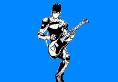 明るく軽快で庶民的、しっかり者で几帳面な人。 家庭的で人と一緒にいたがり、あけっぴろげで元気。 人懐っこくて義を重んじ、物事のけじめを大切にする。 感情的な事で咄嗟に動いてしまう事も多い。 |
ソニック・ユース | ||||||||||||||||||||||||||||||||||||||||||||||||||||||||||||||||||||||||||||||||||||||||||||||||||||||||||||||||||||||||||||||||||||||||||||||||||||||||||||||||||||||||||||||||||||||||||||||||||||||||||||||
中距離スピードタイプ
|
|||||||||||||||||||||||||||||||||||||||||||||||||||||||||||||||||||||||||||||||||||||||||||||||||||||||||||||||||||||||||||||||||||||||||||||||||||||||||||||||||||||||||||||||||||||||||||||||||||||||||||||||
| スタンド概要 | |||||||||||||||||||||||||||||||||||||||||||||||||||||||||||||||||||||||||||||||||||||||||||||||||||||||||||||||||||||||||||||||||||||||||||||||||||||||||||||||||||||||||||||||||||||||||||||||||||||||||||||||
| 音を操るギタリスト風の人型スタンド。 弾いたメロディを真空刃にして飛ばす事ができる。 また、メロディを調節すれば音の波紋化もできる。 振動波の反射を使ったレーダー機能も持つ。 音による催眠効果で様々な効果を生み出せる。 |
|||||||||||||||||||||||||||||||||||||||||||||||||||||||||||||||||||||||||||||||||||||||||||||||||||||||||||||||||||||||||||||||||||||||||||||||||||||||||||||||||||||||||||||||||||||||||||||||||||||||||||||||
| 元ネタ：Sonic Youth・・・ニューヨークのノイズパンクバンド。 | |||||||||||||||||||||||||||||||||||||||||||||||||||||||||||||||||||||||||||||||||||||||||||||||||||||||||||||||||||||||||||||||||||||||||||||||||||||||||||||||||||||||||||||||||||||||||||||||||||||||||||||||
| スタンドイメージ | 説明（※性能はゲーム内のステータス値とは別物です） | ||||||||||||||||||||||||||||||||||||||||||||||||||||||||||||||||||||||||||||||||||||||||||||||||||||||||||||||||||||||||||||||||||||||||||||||||||||||||||||||||||||||||||||||||||||||||||||||
| 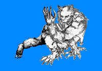 協調性があり打ち解け易いが、現実的でドライな人。 感情的で繊細かつ個性的。独自の美的感覚を持つ。 マイペースで飄々としてるが、実はさびしがり屋で 親愛な人達との時間を何より大切に思っている。 |
ワイルド・ハーツ | ||||||||||||||||||||||||||||||||||||||||||||||||||||||||||||||||||||||||||||||||||||||||||||||||||||||||||||||||||||||||||||||||||||||||||||||||||||||||||||||||||||||||||||||||||||||||||||||
遠距離スピードタイプ
|
|||||||||||||||||||||||||||||||||||||||||||||||||||||||||||||||||||||||||||||||||||||||||||||||||||||||||||||||||||||||||||||||||||||||||||||||||||||||||||||||||||||||||||||||||||||||||||||||
| スタンド概要 | |||||||||||||||||||||||||||||||||||||||||||||||||||||||||||||||||||||||||||||||||||||||||||||||||||||||||||||||||||||||||||||||||||||||||||||||||||||||||||||||||||||||||||||||||||||||||||||||
| 大きな獣人型スタンドだ。狼男風のイメージ。 高速で動き獲物を捕らえる肉食獣のようなスタンドだ。 パワーは強くないが、鋭い爪と牙を持っている。 自動追尾能力と自我を持っているが知性は低く荒々しい。 本体の意志と関係なく飛び出す事もある。 |
|||||||||||||||||||||||||||||||||||||||||||||||||||||||||||||||||||||||||||||||||||||||||||||||||||||||||||||||||||||||||||||||||||||||||||||||||||||||||||||||||||||||||||||||||||||||||||||||
| 元ネタ：The Wildhearts・・・イギリスのハードロックバンド。 | |||||||||||||||||||||||||||||||||||||||||||||||||||||||||||||||||||||||||||||||||||||||||||||||||||||||||||||||||||||||||||||||||||||||||||||||||||||||||||||||||||||||||||||||||||||||||||||||
| スタンドイメージ | 説明（※性能はゲーム内のステータス値とは別物です） | ||||||||||||||||||||||||||||||||||||||||||||||||||||||||||||||||||||||||||||||||||||||||||||||||||||||||||||||||||||||||||||||||||||||||||||||||||||||||||||||||||||||||||||||
| 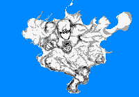 いい加減で面倒臭がるが、落ち着いて重厚な人。 鷹揚で屈託がなく、無神経に見えて自己主張が強い。 意地っ張りで天邪鬼。負けず嫌いで攻撃的な面もある。 強引で反骨心が強い為、技能や基礎能力が人より高い。 |
ディープ・パープル | ||||||||||||||||||||||||||||||||||||||||||||||||||||||||||||||||||||||||||||||||||||||||||||||||||||||||||||||||||||||||||||||||||||||||||||||||||||||||||||||||||||||||||||||
近距離操作タイプ
|
|||||||||||||||||||||||||||||||||||||||||||||||||||||||||||||||||||||||||||||||||||||||||||||||||||||||||||||||||||||||||||||||||||||||||||||||||||||||||||||||||||||||||||||||
| スタンド概要 | |||||||||||||||||||||||||||||||||||||||||||||||||||||||||||||||||||||||||||||||||||||||||||||||||||||||||||||||||||||||||||||||||||||||||||||||||||||||||||||||||||||||||||||||
| 煙状スタンド。空気中の気体密度を操作できる。 気体を毒性の物に変えたり、気圧を変化させたり 空気中の水素と酸素で爆発をさせたりできる。 ただし射程は自分の付近のみと短い。 煙はドクロ顔のついた壷から出入りする。 |
|||||||||||||||||||||||||||||||||||||||||||||||||||||||||||||||||||||||||||||||||||||||||||||||||||||||||||||||||||||||||||||||||||||||||||||||||||||||||||||||||||||||||||||||
| 元ネタ：Deep Purple・・・イギリスのハードロックの代名詞的バンド。 | |||||||||||||||||||||||||||||||||||||||||||||||||||||||||||||||||||||||||||||||||||||||||||||||||||||||||||||||||||||||||||||||||||||||||||||||||||||||||||||||||||||||||||||||
| スタンドイメージ | 説明（※性能はゲーム内のステータス値とは別物です） | ||||||||||||||||||||||||||||||||||||||||||||||||||||||||||||||||||||||||||||||||||||||||||||||||||||||||||||||||||||||||||||||||||||||||||||||||||||||||||||||
| 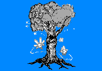 合理的で強引だが、融通が利き、いい意味で図太い人。 感情的に優柔不断で独り善がりな気質も持っているが 我慢強く、他人とぶつからないように努められる人。 好んで一人でいる事が多いが、結構活動的なタイプ。 |
ピクシーズ | ||||||||||||||||||||||||||||||||||||||||||||||||||||||||||||||||||||||||||||||||||||||||||||||||||||||||||||||||||||||||||||||||||||||||||||||||||||||||||||||
中距離操作タイプ
|
|||||||||||||||||||||||||||||||||||||||||||||||||||||||||||||||||||||||||||||||||||||||||||||||||||||||||||||||||||||||||||||||||||||||||||||||||||||||||||||||
| スタンド概要 | |||||||||||||||||||||||||||||||||||||||||||||||||||||||||||||||||||||||||||||||||||||||||||||||||||||||||||||||||||||||||||||||||||||||||||||||||||||||||||||||
| 小さな物や生き物に侵入し操作する樹木型スタンド。 アンテナの役割を果たす妖精型スタンドパワーを放つ。 妖精型エネルギーが侵入した物体を操る事ができる。 ただし子供が持てる程度の重さしか動かせない。 妖精を複数送り込めば、その数だけ力や操作点が増える。 また、根を地中深くまで降ろして地面を操作する事もできる。 |
|||||||||||||||||||||||||||||||||||||||||||||||||||||||||||||||||||||||||||||||||||||||||||||||||||||||||||||||||||||||||||||||||||||||||||||||||||||||||||||||
| 元ネタ：Pixies・・・轟音ギターと絶叫ボーカルが特徴的なロックバンド。 | |||||||||||||||||||||||||||||||||||||||||||||||||||||||||||||||||||||||||||||||||||||||||||||||||||||||||||||||||||||||||||||||||||||||||||||||||||||||||||||||
| スタンドイメージ | 説明（※性能はゲーム内のステータス値とは別物です） | ||||||||||||||||||||||||||||||||||||||||||||||||||||||||||||||||||||||||||||||||||||||||||||||||||||||||||||||||||||||||||||||||||||||||||||||
| 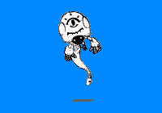 没協調性が少なく溶け込み難く、素直で自分を飾らない人。 常に何かに怯え、被害妄想と自己嫌悪が強いタイプ。 誤解される事を嫌い、疑問を晴らさずにはいられない。 しかし、守るべき者の為なら爆発的な力を発揮する。 |
ミラクルズ | ||||||||||||||||||||||||||||||||||||||||||||||||||||||||||||||||||||||||||||||||||||||||||||||||||||||||||||||||||||||||||||||||||||||||||||||
远距离操作型
|
|||||||||||||||||||||||||||||||||||||||||||||||||||||||||||||||||||||||||||||||||||||||||||||||||||||||||||||||||||||||||||||||||||||||||||||||
| スタンド概要 | |||||||||||||||||||||||||||||||||||||||||||||||||||||||||||||||||||||||||||||||||||||||||||||||||||||||||||||||||||||||||||||||||||||||||||||||
| 他人の意識を操作する事ができるスタンド。 生体電気を相手に取り付かせて操作する。 それにより他人に自分の存在を気付かなくする事ができる。 更に強い暗示を掛けてダメージを与える事もできる。 また、拒絶する事で攻撃を反射する事も可能。 |
|||||||||||||||||||||||||||||||||||||||||||||||||||||||||||||||||||||||||||||||||||||||||||||||||||||||||||||||||||||||||||||||||||||||||||||||
| 元ネタ：The Miracles・・・スモーキー･ロビンソン率いるディスコグループ。 | |||||||||||||||||||||||||||||||||||||||||||||||||||||||||||||||||||||||||||||||||||||||||||||||||||||||||||||||||||||||||||||||||||||||||||||||
| スタンドイメージ | 説明（※性能はゲーム内のステータス値とは別物です） | ||||||||||||||||||||||||||||||||||||||||||||||||||||||||||||||||||||||||||||||||||||||||||||||||||||||||||||||||||||||||||||||
| 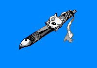 人付き合いは上手くないが誠実で正直な人。 自分を飾らず、我慢強く静かで落ち着いている。 控えめで硬い感じで、何事も抑制する性格。 口数は少なめであまり無駄話はしない |
ナパーム・デス | ||||||||||||||||||||||||||||||||||||||||||||||||||||||||||||||||||||||||||||||||||||||||||||||||||||||||||||||||||||||||||||||
近距離特殊タイプ
|
|||||||||||||||||||||||||||||||||||||||||||||||||||||||||||||||||||||||||||||||||||||||||||||||||||||||||||||||||||||||||||||||
| スタンド概要 | |||||||||||||||||||||||||||||||||||||||||||||||||||||||||||||||||||||||||||||||||||||||||||||||||||||||||||||||||||||||||||||||
| 『爆』の文字をナパーム弾に変えるスタンド。 スタンド体のペンで書いた『爆』の文字が爆弾になる。 文字が大きければ爆発も大きくなるが、射程距離は同じ。 爆発は１０秒以内であれば時限爆破もできる。 また、成長すれば更に文字のレパートリーが増える。 |
|||||||||||||||||||||||||||||||||||||||||||||||||||||||||||||||||||||||||||||||||||||||||||||||||||||||||||||||||||||||||||||||
| 元ネタ：Napalm Death・・・イギリスのグラインド・コアの始祖的バンド。 | |||||||||||||||||||||||||||||||||||||||||||||||||||||||||||||||||||||||||||||||||||||||||||||||||||||||||||||||||||||||||||||||
| スタンドイメージ | 説明（※性能はゲーム内のステータス値とは別物です） | ||||||||||||||||||||||||||||||||||||||||||||||||||||||||||||||||||||||||||||||||||||||||||||||||||||||||||||||
| 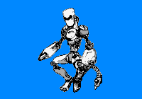 一見おしゃべりで明るく陽気だが、油断しない人。 建設的で人々の中心にいたがり、野心が強く豪胆。 大胆で即決する反面、警戒心が強く人を支配したがる。 衝動的で怒りに身を任す事も多く、人に恐れられる。 |
カーペンターズ | ||||||||||||||||||||||||||||||||||||||||||||||||||||||||||||||||||||||||||||||||||||||||||||||||||||||||||||||
中距離特殊タイプ
|
|||||||||||||||||||||||||||||||||||||||||||||||||||||||||||||||||||||||||||||||||||||||||||||||||||||||||||||||
| スタンド概要 | |||||||||||||||||||||||||||||||||||||||||||||||||||||||||||||||||||||||||||||||||||||||||||||||||||||||||||||||
| スタンド工具で物体を作り変える人型スタンド。 生物・無機物問わず改造・分解などが出来る。 改造後の相手にダメージ等はなく、普通に活動できる。 パワーは然程強くはないが、スピードはある。 ただし精密度はあまり高くない。 |
|||||||||||||||||||||||||||||||||||||||||||||||||||||||||||||||||||||||||||||||||||||||||||||||||||||||||||||||
| 元ネタ：Carpenters・・・アメリカの伝説的兄妹ポップス・デュオ。 | |||||||||||||||||||||||||||||||||||||||||||||||||||||||||||||||||||||||||||||||||||||||||||||||||||||||||||||||
| スタンドイメージ | 説明（※性能はゲーム内のステータス値とは別物です） | ||||||||||||||||||||||||||||||||||||||||||||||||||||||||||||||||||||||||||||||||||||||||||||||
| 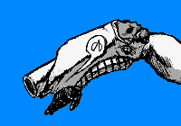 明るく柔軟性に富むが感情的で好き嫌いが強い人。 怒りっぽく、細かい事を気にする一面もある。 親切で情にもろく、人と打ち解けやすい反面 情に任せて感情的になる事が多い。 |
クイック・シルバー | ||||||||||||||||||||||||||||||||||||||||||||||||||||||||||||||||||||||||||||||||||||||||||||||
遠距離特殊タイプ
|
|||||||||||||||||||||||||||||||||||||||||||||||||||||||||||||||||||||||||||||||||||||||||||||||
| スタンド概要 | |||||||||||||||||||||||||||||||||||||||||||||||||||||||||||||||||||||||||||||||||||||||||||||||
| 金属や鉱物をエネルギーに変換するスタンド。 本体の腕にスタンド体の砲台が現れる。 スタンドエネルギー体に作り変えて発射できる。 言わば金属を燃料にするスタンドレーザー砲。 単純な破壊力だけなら間違いなくトップクラス。 ちなみに一応着脱可能。 |
|||||||||||||||||||||||||||||||||||||||||||||||||||||||||||||||||||||||||||||||||||||||||||||||
| 元ネタ：Quiksilver・・・サイケデリックフォークバンドの先駆者。 | |||||||||||||||||||||||||||||||||||||||||||||||||||||||||||||||||||||||||||||||||||||||||||||||
| スタンドイメージ | 説明（※性能はゲーム内のステータス値とは別物です） | ||||||
| 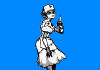 感情的で共感し易く、傷つき易く情愛深い人。 ただ協調性が乏しく、人を切り捨てる事も多い。 繊細で神経質で、真実を知りたがり疑り深い。 何事にも無駄を感じ孤独を好み、よく考え事をする。 |
カーディガンズ | ||||||
近距離補助タイプ
|
|||||||
| スタンド概要 | |||||||
| ナースの姿をした補助系スタンド。 スタンドパワーで人を治療する事ができる。 また、医療器具を使った攻撃も可能。 純粋なパワーは弱いから注意。 |
|||||||
| 元ネタ：The Cardigans・・・60年代風のアコースティックロックバンド。 | |||||||
| スタンドイメージ | 説明（※性能はゲーム内のステータス値とは別物です） | ||||||
| 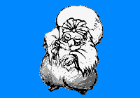 軽快で親しみ易く、ユーモアがあり機転が効く人。 優しく親切だが、口が軽くその場限りの事も多い。 気が小さく利発的で、逃げ足が速く無責任な時がある。 依存的で落ち着きがなく、二面性が強く自分を隠す。 |
キャラバン | ||||||
中距離補助タイプ
|
|||||||
| スタンド概要 | |||||||
| アイテムを作り出せる商人型スタンド。 物質の原子配列を変えて、別の物に組み替えられる。 完全に自立思考し、本体とは商売関係として接する。 本体の精神力を代金代わりに、物質を生成する。 |
|||||||
| 元ネタ：Caravan・・・60年代イギリスのプログレッシブ・ロックバンド。 | |||||||
| スタンドイメージ | 説明（※性能はゲーム内のステータス値とは別物です） | ||||||
| 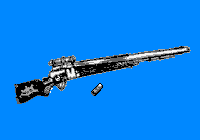 明るくおしゃべり、友好的で積極的な人。 ユーモアがあり話し上手。親切だけどちょっと自慢屋。 怒りっぽいけど悩みが多く、そそっかしくて少し天然。 趣味が広く一芸に秀で、活発で行動的。 |
Mr. BIG | ||||||
遠距離補助タイプ
|
|||||||
| スタンド概要 | |||||||
| 大きなライフル銃型のスタンド。 スタンド体の弾丸を発射する。 弾丸は特殊効果があり、攻撃よりむしろ補助用。 状態異常を引き起こしたり、逆に回復したりできる。 一応、スタンド銃で直接殴ったりもできる。 |
|||||||
| 元ネタ：Mr. Big・・・アメリカのハードロックバンド。 | |||||||
| スタンドイメージ | 説明（※性能はゲーム内のステータス値とは別物です） | ||||||
| 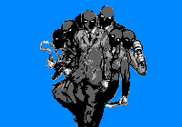 少し暗めで口数が少なく、大人びて気取り屋な人。 自分を率直に出せず、複雑で少し屈折気味。 しかしそれは話下手で打ち解け難い悩みからでもある。 落ち込み易く引きずりやすいが、人の為に涙を流せる。 |
スペシャルズ | ||||||
近距離群体タイプ
|
|||||||
| スタンド概要 | |||||||
| 人間サイズの武装した覆面黒服のＳＰ型スタンド。 全部で６体いて本体の指令に忠実に動く。 自我を持ち、それぞれ性格が違う。 しかしパワー自体は通常の人間程度なので弱い。 ダメージはそれぞれ相当部位に1/6で伝達される。 |
|||||||
| 元ネタ：The Specials・・・イングランドの2トーンスカの草分け的バンド。 | |||||||
| スタンドイメージ | 説明（※性能はゲーム内のステータス値とは別物です） | ||||||
| 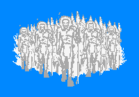 少し暗めで口数が少なく、大人びて気取り屋な人。 自分を率直に出せず、複雑で少し屈折気味。 しかしそれは話下手で打ち解け難い悩みからでもある。 落ち込み易く引きずりやすいが、人の為に涙を流せる。 |
ファラオ・サンダース | ||||||
中距離群体タイプ
|
|||||||
| スタンド概要 | |||||||
| 雷で出来たエジプト従者型群体スタンド。全部で30体。 触れれば感電させる事ができ槍で突き刺して攻撃する。 ただし電圧も低く破壊力はそこまで高くはない。 スタンド体は電気の塊で、物理攻撃は通用しないし スタンドの攻撃自体も分散化できる。 |
|||||||
| 元ネタ：Pharoah Sanders・・・アメリカのジャズ・サクソフォーン奏者。 | |||||||
| スタンドイメージ | 説明（※性能はゲーム内のステータス値とは別物です） | ||||||
| 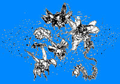 こまめに動いて一見働き者、大人しく控えめな人。 緊張感が強く、疎外される事を恐れている。 神経質で几帳面、争いや葛藤を極度に避けるタイプ。 誠実だが細かく、穏やかで受容的で同情心に厚い。 |
アダム・アント | ||||||
遠距離群体タイプ
|
|||||||
| スタンド概要 | |||||||
| 小さな虫型群体スタンドで全1000体。生物に侵食する。 個々に意志はなく、近くの生物を食らう事に執着する。 破壊力は低いが、敵の戦意を奪う事には特化している。 尚、虫がやられても本体にフィードバックはない。 しかし本体も放つだけで細かな命令は与えられない。 |
|||||||
| 元ネタ：Adam ant・・・奇抜なコスチュ－ムと言動が特徴的なパンクロッカー。 | |||||||